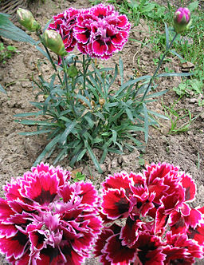

Carnations in bloom
By Amalie bethune
I learned how to make a responsive webpage using HTML, JavaScript and Bootstrap. Take a look at my GitHub Repo.
Carnation buds and blooms
Click the image to see this flower grow from just a tiny bud to a beautiful blossom.

Photo of carnation buds by JeannieNadja via Wikimedia Commons Photo of a carnation bloom Photo by 撮影者：カールおじさん at 草花写真館たね at ja.wikipedia via Wikimedia Commons. Code adapted from Mindy McAdams.
Cultivars
Hover the cursor over the photo to see two different cultivars of carnation

Photo of a pink carnation by darkone via Wikimedia Commons. Photo of moondust carnation by pagemoral via Wikimedia Commons Code adapted from Mindy McAdams' JSFiddle.